1U CubeSat
A compact mechatronics build combining structural CAD, PCB integration, antenna design, soldering, and 3D printing.
Overview
The goal of this project was to build a complete 1U CubeSat around one core mission: increase payload space without sacrificing structural strength or basic satellite functionality. That meant the structure, avionics, antennas, deployment system, communication hardware, and fabrication process all had to be designed together rather than as separate subsystems.
I worked across the full development cycle, from concept generation and mechanical design to PCB packaging, antenna simulation, structural validation, controller programming, physical fabrication, and final system integration.
Starting with the Architecture
We began by defining the problem before touching CAD. The design needed to remain within the 1U CubeSat envelope while maximizing usable payload volume and keeping the structure easy to assemble. Because payload space was the main constraint, every structural and electrical decision had to be judged by how much internal volume it consumed.
The team generated eleven structural concepts and shortlisted six based on structural weight, strength, assembly time, and design flexibility. We explored ideas including hinged faces, split structures, sliding PCB mounts, and modular two-part assemblies before selecting the configuration that best balanced packaging and manufacturability.
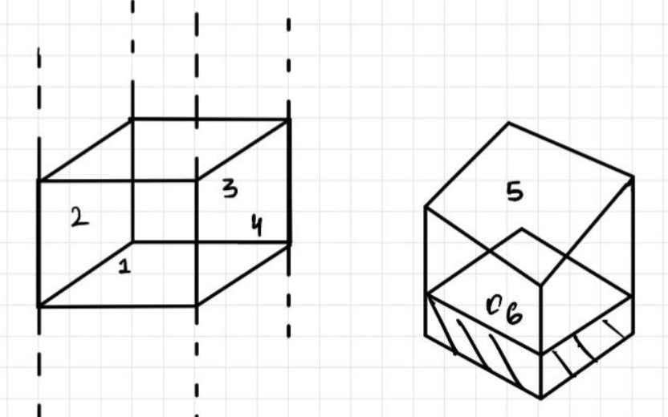
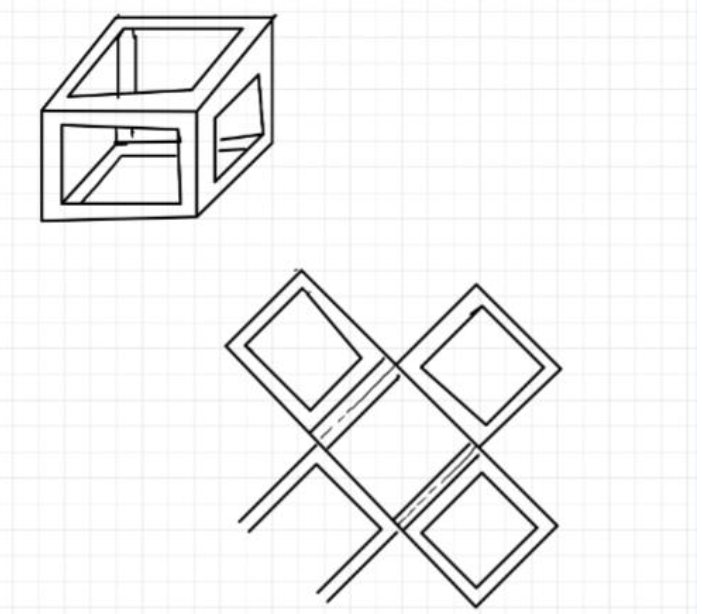
Printer limitations, antenna packaging, and the need to keep the avionics compact forced us to revisit some of the early concepts. The final structure evolved into a two-part assembly: one section formed the primary enclosure while the second used corner pillars to support the avionics PCB.
This arrangement concentrated the electronics into the upper portion of the CubeSat instead of spreading them throughout the internal volume. The PCB section occupied roughly 3.5 cm of the structure height, leaving the remaining space available for the mission payload.
Mechanical Design and Packaging
Once the architecture was fixed, I developed the structure in Fusion 360. The model had to do more than form a cube. It had to provide locations for the PCB, antennas, switches, fasteners, and deployment hardware while remaining simple enough to manufacture using the available 3D-printing process.
The final structure without the PCB weighed approximately 187 grams. Keeping the frame lightweight was important because reducing structural mass and volume directly increased the capacity available for payload hardware.
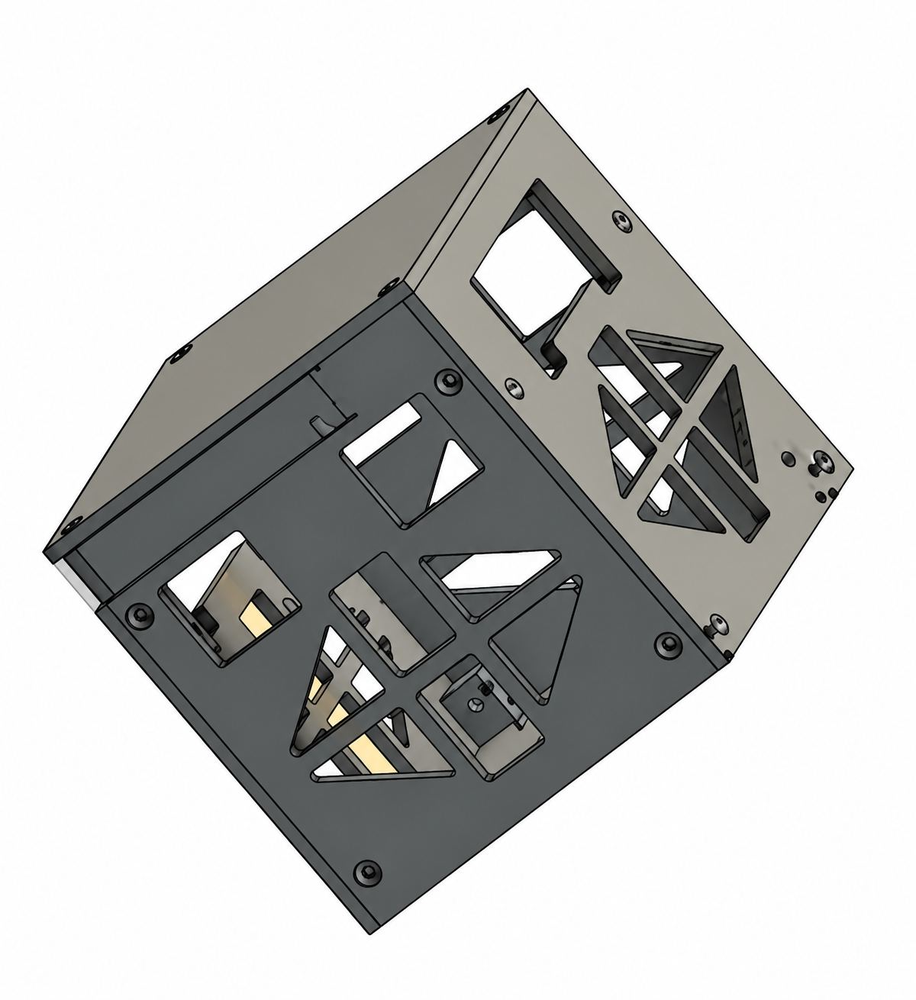
The mechanical and avionics designs developed in parallel. As PCB dimensions changed, structural clearances had to change with them, and changes to the CubeSat geometry affected where the electronics could be placed. The two teams therefore had to iterate together rather than finalize either subsystem independently.
Building the Avionics Around the Available Volume
The avionics architecture used an Arduino Nano onboard the CubeSat together with an MPU-6050 inertial sensor, MOSFET switching, transmitter, batteries, screw terminals, switches, and the antenna-deployment circuit.
Because the structural design required the electronics and both batteries to remain on one side of the mounting plate, the PCB layout was driven heavily by packaging. I first developed the schematic and then created the board layout in Eagle, repeatedly adjusting component locations and connections to fit the mechanical design.
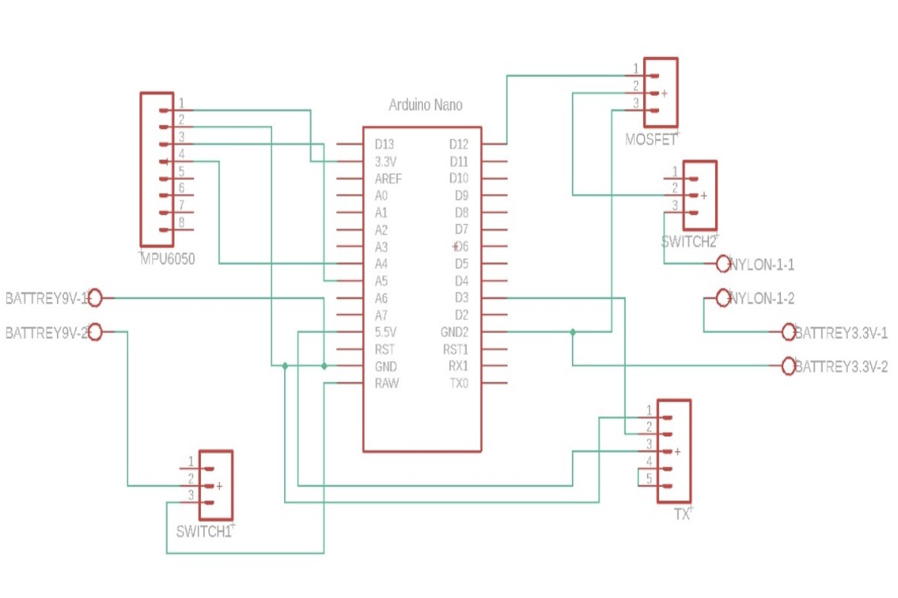
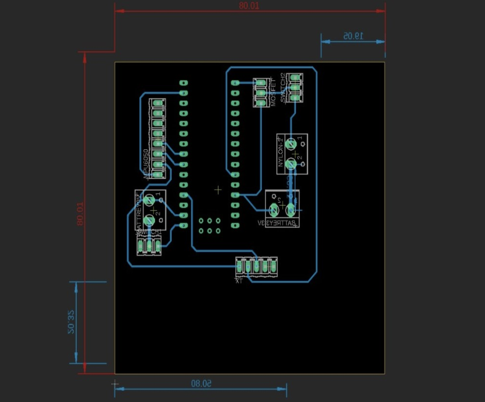
After the board layout was established, I used the physical dimensions of the controller, batteries, switches, terminals, sensors, and transmitter to build a 3D representation of the complete electronics package. This made it possible to place the actual avionics assembly inside the structural model and verify orientation and clearance before fabrication.
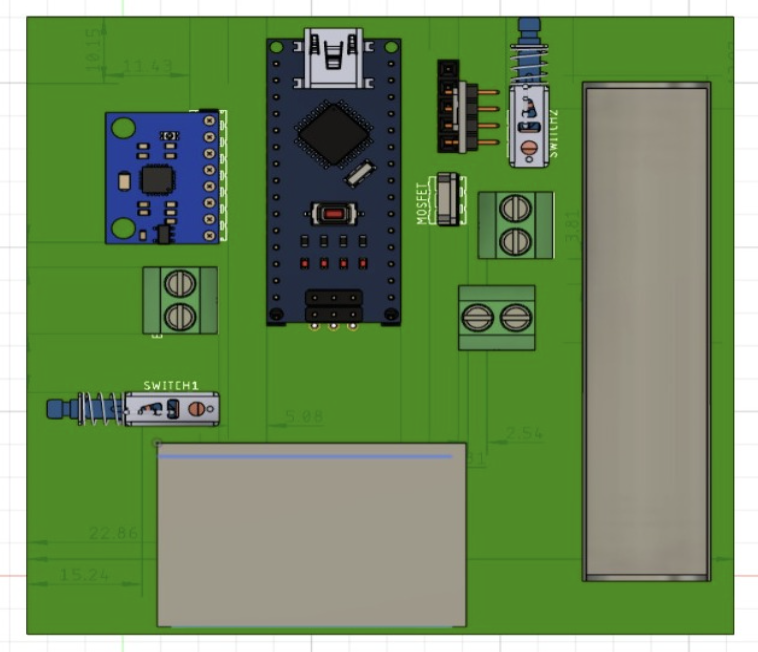
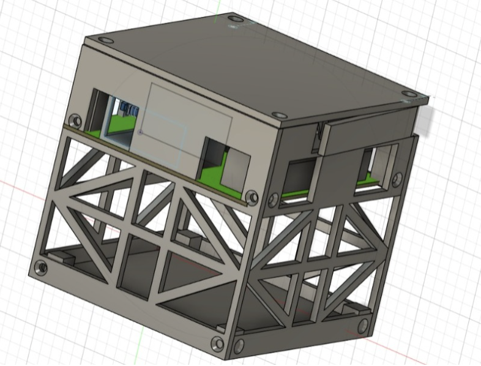
Designing the Communication System
The mission required a 433 MHz communication antenna, so I first calculated the half-wave dipole dimensions in Excel and then transferred those parameters into CST Studio.
I created the dipole geometry, defined the frequency range, introduced the required center gap, and simulated the antenna across approximately 333 MHz to 533 MHz. The resulting antenna achieved a simulated directivity corresponding to approximately 1.64, matching the required design target.
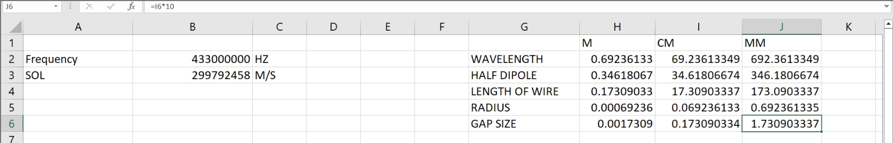
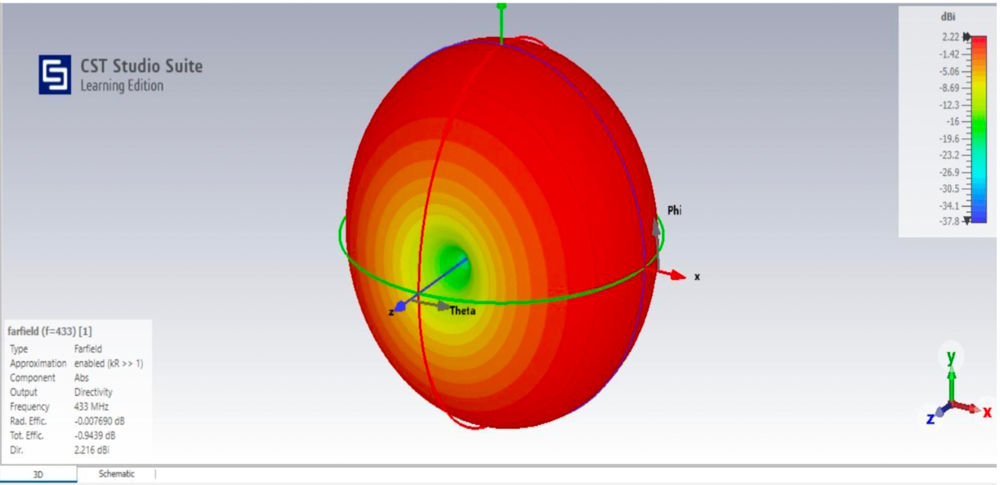
Solving Antenna Deployment
The antennas also had to remain compact while the CubeSat was stored and then deploy after activation. We solved this with a burn-wire deployment mechanism.
The metal antennas were restrained using nylon wire. A separate 3.3 V battery powered the deployment circuit through a MOSFET. After activation, current heated the element until the nylon restraint failed, allowing the antennas to release from the stowed position.
The deployment system was intentionally packaged into the same upper region as the avionics so that it did not consume the lower payload volume.
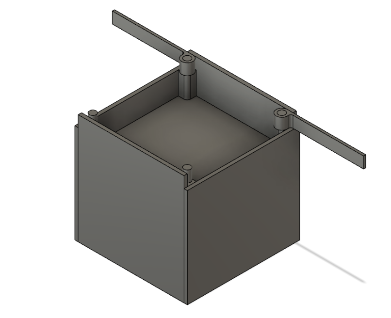
Validating the Structure Before Fabrication
Once the final mechanical model and electronics package were assembled digitally, I used simulation to check how the structure would behave under different operating conditions.
The validation included static stress, thermal, and vibration analysis. The structural analysis was used to examine stress, strain, and safety behavior; the thermal study evaluated temperature distribution and gradients; and the vibration analysis was used to identify dynamic behavior that could indicate potential structural failure.
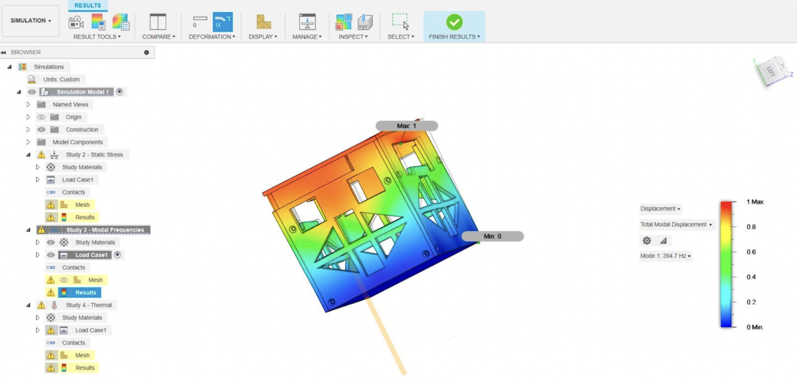
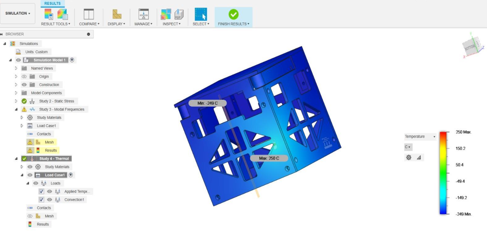
Programming the Flight and Ground Systems
The CubeSat and ground station used separate controllers. The onboard system used an Arduino Nano because of the space constraint, while the ground station used an Arduino Uno.
On the CubeSat side, the control sequence began after deployment. The MOSFET-controlled antenna deployment system was triggered after a delay, the MPU-6050 then began collecting attitude data, and the transmitter sent the X, Y, and Z angle data to the ground station.
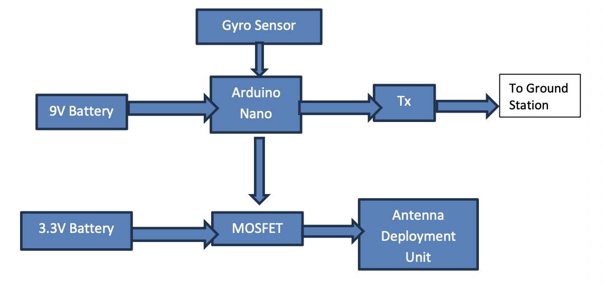
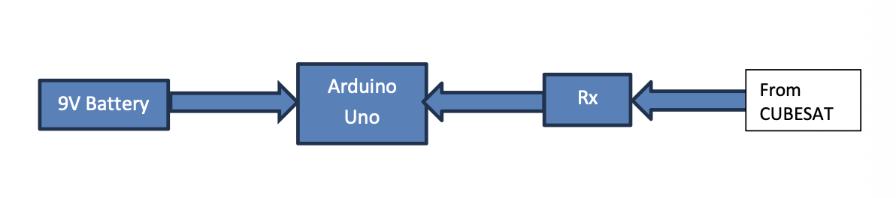
The ground station receiver decoded the transmitted data and displayed the measured attitude values on the serial monitor, completing the telemetry chain from the CubeSat sensor to the ground system.
Turning the Digital Design into Hardware
After the design, simulations, and control logic were validated, the project moved into fabrication. The structural faces were prepared in Ultimaker Cura and 3D printed in PLA+, then assembled using screws to form the complete CubeSat structure.
The PCB was fabricated manually from the finalized board layout. The pattern was transferred onto copper board and the excess copper was removed using ferric chloride. After etching, I checked electrical continuity with a multimeter before drilling the mounting holes and installing the header pins, switches, screw terminals, sensors, transmitter, MOSFET, and Arduino Nano.
The physical antennas were fabricated from aluminum strips. Connection wires were soldered to the antenna ends, the communication range was checked, and the antennas were then mounted into the grooves provided in the structure.

Outcome
The final CubeSat met the original objective of concentrating the avionics and deployment system into a small portion of the structure while preserving most of the internal volume for payload. The complete electronics package and deployment hardware occupied approximately 35% of the CubeSat volume.
The final system combined a lightweight structure, working telemetry electronics, a simulated and fabricated dipole antenna, successful antenna deployment, sensor-based attitude measurement, and ground-station communication in one integrated 1U platform.
What made the project valuable was the full development sequence: mission definition → concept selection → CAD → PCB packaging → antenna design → simulation → embedded control → fabrication → integration → validation . Each stage influenced the next, which made the project a practical exercise in designing a complete electromechanical system rather than a collection of isolated parts.